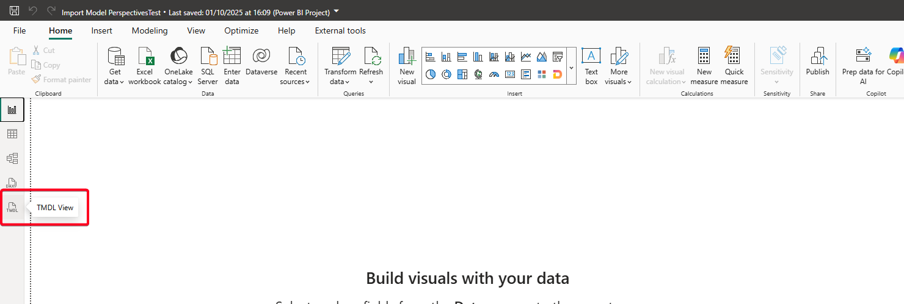
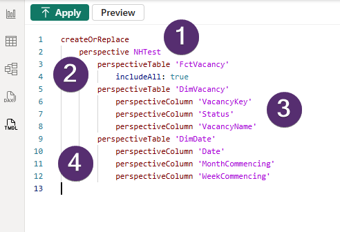
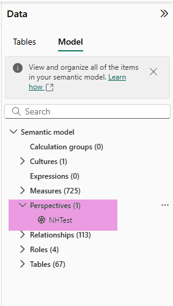
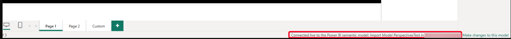
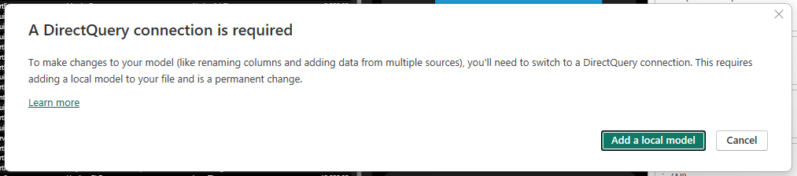
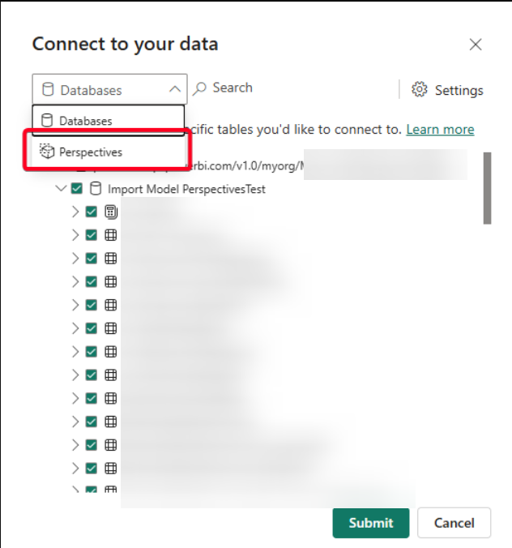
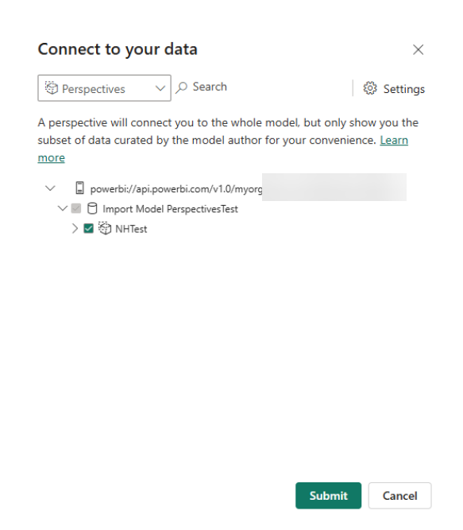
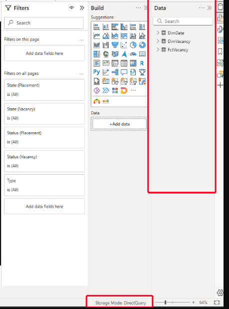
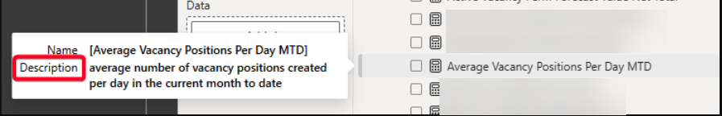
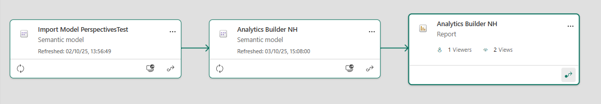

Context
Amongst our reporting suite, we have a self-serve report where the end user can create their own visuals using drag-and-drop. This report uses the same semantic model as the other reports.
This has one major drawback: the self-service user sees all the columns, calculated columns and measures in the semantic model. This could feel overwhelming for the user as they may not have the necessary data literacy or context to understand or distinguish all the objects.
So the question was raised as to whether it would be worthwhile moving the self-serve report to be based off a different semantic model.
Below is a write-up of the investigation carried out:
Background
The Analytics Builder self-serve report is hooked up to the current semantic model. The requirement was to look at the possibility of having a second model on top of our existing model purely to feed the Analytics Builder report.
The aim of this is to make the user experience of the Analytics Builder more friendly without increasing our workload and/or technical debt.
During this investigation the following would need to be addressed:
- What extra work / tech debt will it give us maintaining measures in two models?
- Is there a way we create / change measures in our existing model and we can import / replicate them automatically into the secondary model?
- How would our release be impacted if at all?
- How would Row-Level Security (RLS) be impacted if at all?
- Would the limitations / constraints of direct query (DQ) cause issues?
Options Considered
A number of potential options were considered as follows:
1. Perspectives and renaming fields directly
The idea being to use a perspective to get a subset of the semantic model schema and rename the fields required to more user-friendly names.
2. Perspectives and Calculation Groups
Again, using a perspective to reduce the schema to the tables required for Analytics Builder and then somehow using Calculation Groups to alias the object names to be more user-friendly.
3. Dataflows Gen 1 connected to current semantic model
Set up a dataflow in the workspace which has the data source as the semantic model. Then filter the schema in the dataflow to return only the subset of tables required and hook up the report to this dataflow.
4. Use the Power BI REST API with objects in the Service
Use Powershell to locate the semantic model in the workspace, transform the schema to remove irrelevant tables and publish as a new semantic model in the workspace.
5. Use the Power BI REST API on objects locally
Extend the existing customer deployment script by programmatically downloading the semantic model from the Service, opening Tabular Editor, connecting to the local copy of the semantic model, running a C# script which removes unwanted tables and leaves the model optimised for the Analytics Builder report and then publish this to the service and connect the Analytics Builder report.
Investigation
The investigation showed that most of the options considered have blockers which I have summarised as follows:
- Calculation Groups cannot be used for simple renaming.
- Dataflows Gen 1 cannot connect to datasets. (I believe Gen 2 can but a Fabric licence is required - this was not investigated)
- The REST API doesn't expose the model schema so cannot be used alone to alter the tables.
- To export using the REST API requires Premium capacity.
This left the only option as setting up a perspective.
Proof of Concept / Example
In order to try this out, I first opened the current semantic model.
I then navigated to the TMDL view which is now in GA (See Power BI September 2025 Feature Summary):

From here, I defined the perspective. To do this we use a createOrReplace command, give the perspective a name and then declare what tables and columns we want to include. [Note you can also include ad hoc measures using "perspectiveMeasure"]:

Clicking apply from here then adds the perspective to the semantic model. A semantic model can contain a number of different perspectives.

We can now save the semantic model and publish it to the service.
Now we need to connect the Analytics Builder report to this perspective and unfortunately this is not as straightforward as it should be.
First we open the Analytics Builder report and link it to the semantic model in which we have defined the perspective.

Now we click on "Make changes to this model" and we are faced with a warning about a DirectQuery connection being required:

We add a local model ensuring we select Perspectives from the dropdown option:

and then select the Perspective we've just defined in the semantic model:

The connection now changes to DirectQuery and the list of tables etc available are as per the Perspective definition from earlier:

Limitations
The example above proves that the requirement can be met, however there are some caveats / limitations to the approach.
No renaming capabilities
A perspective only hides or exposes objects from the original semantic model. A perspective cannot rename them. This still has to happen in the original semantic model.
This can be mitigated in the semantic model by using more precise naming conventions for objects, renaming only the objects used in the Analytics Builder report and / or use of the description box in Power BI (which appears when a user hovers over the object in question):

DirectQuery behaviour when connecting
In all cases a thin report connected to a Perspective ends up as a DirectQuery connection. This means there might be a performance hit if the end users interact heavily with the Analytics Builder report.
In addition the workspace requires a host semantic model to be set up to port through to connect to the Perspective. This is an additional (empty) object that needs to stay in the workspace:

Perspectives are a usability feature
Perspectives are specifically designed to give the developer or user the option to hide or expose objects from the enterprise semantic model. They therefore meet the brief here.
However they are a feature and are not bulletproof. It is still possible for the end user to gain access to other fields from the semantic model, if they wanted to and were savvy enough.
That said, security is guaranteed: the RLS that is in place in the original semantic model will also hold firm in the report connected to the perspective.
Maintenance overhead
Any time a new measure, column, calculated column etc. that needs to be visible to the Analytics Builder report is added to the original semantic model, the Perspective definition will need to be updated manually to include it.
This additional maintenance can be weighed up against how often the measures and columns would actually need to change in the Analytics Builder. And changing the Perspective definition is not an onerous task.
Customer deployments
Since this is an architecture change that affects one report only, this could be an additional manual step in the process short-term with the aim to enhance the existing PowerShell script to automate this report deployment in the long-term.
Summary
There is no solution that fulfils the whole brief. Perspectives feels like the most viable solution as long as we are aware of the caveats above. To directly answer the questions posed:
What extra work / tech debt will it give us maintaining measures in two models?
A: The perspectives approach means you only have one model to worry about.
Is there a way we create/change measures in our existing model and we can import/replicate them automatically into the secondary model?
A: The suggested approach of perspectives means we're only really dealing with one base model so this wouldn't be a concern. The only thing that needs maintenance is new measures, columns, calculated columns. If we create new objects and want them in the perspectives model, we will need to have to add them manually to the perspective definition.
How would our release be impacted if at all?
A: I wonder if this could be added to the existing deployment script longer term? Short term the deployment can be manual as it is only one extra report.
How would RLS be impacted if at all?
A: RLS would be inherited from the original semantic model.
Columns/Calculated columns & renaming?
A: User-friendly naming needs to be done in the original semantic model. One of the drawbacks of perspectives is there is no scope to be able to rename objects.
Limitation/constraints of DQ
A: Although the connection is DirectQuery, it is not DirectQuery in the traditional sense. As I understand it, every interaction in the thin report will send queries back to the original semantic model, not the original database (as in traditional DQ).
So the query goes from the Analytics Builder report to the original semantic model only. Because the semantic model is in Import mode, the data is cached in this model so the query is answered here and returned to the Analytics Builder. It does not have to travel backwards and forwards to the Azure SQL database. There will be a small amount of latency for the Analytics Builder user compared to if it was in Import mode but it shouldn't be a frustrating amount (unless there are a lot of users interacting with the report concurrently) and may not even be that noticeable to the end user.
Source: https://www.mssqltips.com/sqlservertip/8153/perspectives-in-power-bi/What Happened Next?
The team went ahead with this change as described. The customer deployments of the Analytics Builder are manual to begin with (which is workable since only a small number of customers are receiving it initially) while we incorporate this into the automatic deployment process.